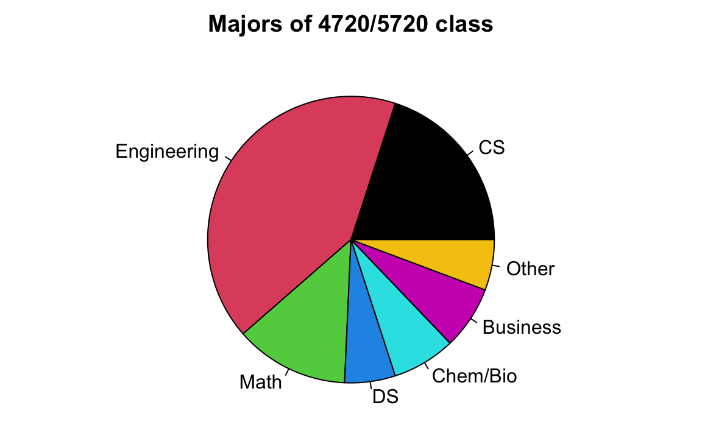
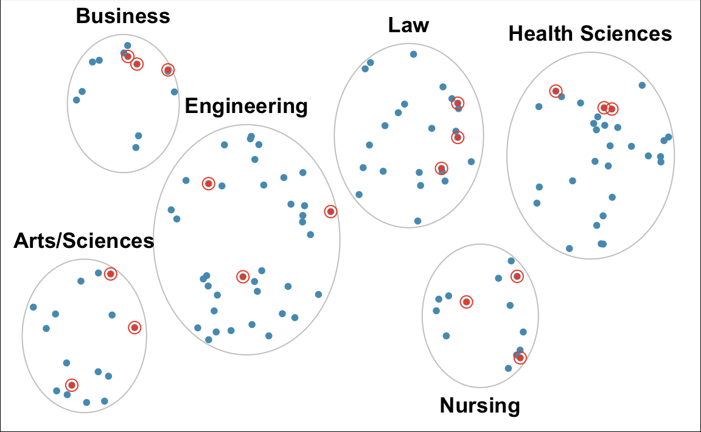
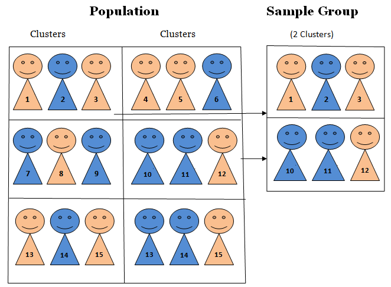
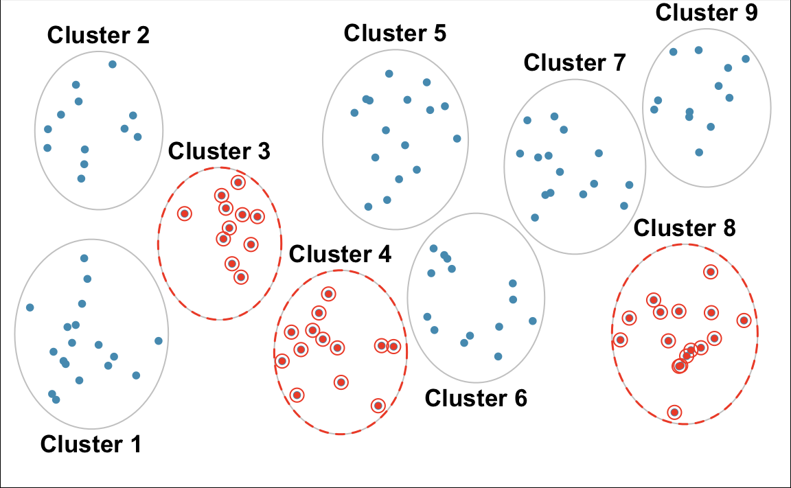

2 Data Collection and Data Type
2.1 Data
What is Data?
- Because statistics is a science of data, we first need to understand what data is.
-
Data can be described as a set of objects on which we observe or measure one or more characteristics.
- Objects are individuals, observations, subjects or cases in statistical studies.
- A characteristic or attribute is also called a variable because it varies from one object to another.
- We usually store a data set in a matrix form that has rows and columns.
- Each row corresponds to a unique case or observational unit.
- Each column represents a characteristic or variable.
- This structure allows new cases to be added as rows or new variables to be added as columns.
Example
- Figure 2.1 below is a data set of Marquette basketball players stored in matrix form.
- The objects are individuals or players in the data and each have their own associated row.
- Each player has several characteristics or attributes shown in the columns associated with them.
- These include jersey number, class, position, height, weight, hometown and high school.
- These characteristics can also be referred to as variables because they vary from one player to another.
2.2 Population and Sample
Target Population
- The first step in conducting a study is to identify questions to be investigated.
- A clear research question is helpful in identifying
- what cases should be studied (row)
- what variables are important (column)
- Once the research question is determined, it is important to identify the target population to be investigated.
- The target population is the complete collection of data we’d like to make inference about.
GPA Example
- Research Question: What is the average GPA of currently enrolled Marquette undergraduate students?

- Target Population: All Marquette undergraduate students that are currently enrolled.
- Because all Marquette undergrads that are currently enrolled are the complete collection of data we’d like to make inference about, each currently enrolled Marquette undergrad is an object.
- Average GPA is the variable or population property we would like to make an inference about.
Note
- Students who are not currently enrolled or students that have already graduated are not our interest, so they shouldn’t be a part of target population.
Heart Disease Example
- Does a new drug reduce mortality in patients with severe heart disease?

- Target Population: All people with severe heart disease.
- Mortality is the variable or population property we would like to make an inference about.
Sample Data
- In some cases it’s possible to collect data of all the cases we are interested in.
- However, most of the time it is either expensive or too time consuming to collect data for every case in a population.
- What if we tried to collect data on the average GPA of all students in Illinois? The U.S.? The world? üò± üò± üò±
- The solution to this problem is sampling.
- A sample is a subset of cases selected from a population.
- We are not able to collect the average GPA of every member of the population, but we can collect a sample from that population which has fewer objects (Figure 11.1).
- We can then compute the average GPA of the sample data.

- Our hope is that the average GPA of the sample is close to the average GPA of the population, which is our main interest.
- For the sample’s average GPA to be close to population’s average GPA, we want the sample to look like the population such that they share similar attributes including GPA.
Good Sample vs. Bad Sample

- The sample is convenient to be collected, but as Figure 2.3 shows, it is NOT representative of the population.
- Because this class is primarily composed of STEM majors, it may not share the attributes necessary with the target population for the two to share a similar average GPA.
- Therefore, we call this a biased sample.
- The average GPA of the class may differ greatly from the average GPA of all MU undergrads.

- As shown in Figure 2.5, the average GPA differs based on students’ majors.
- Because this class consists of mostly STEM majors, it is likely that the average GPA of its students is not the same as the average GPA of all MU undergraduates.
- Figure 2.4 depicts that sampling needs to be done appropriately to ensure the sample is representative of the population.

How do we collect and why do we need a representative sample?
- We always seek to randomly select a sample from a population.
- Random sampling usually give us a representative sample, as long as the sample size, or the number of objects in the sample, is not too small.
- It is important to collect samples this way, because many statistical methods are based on the randomness assumption.
2.3 Data Collection
Two Types of Studies to Collect Sample Data
- There are two types of studies that are used to collect data: observational studies and experimental studies.
- An observational study is a study in which those collecting the data observe and measure characteristics/variables, but do NOT attempt to modify or intervene with the subjects being studied.
- Example: Sample from 1️⃣ the heart disease and 2️⃣ heart disease-free populations and record the fat content of the diets for the two groups.
- In an experimental study, some treatment(s) is applied and then those collecting data proceed to observe its responses or effects on the individuals (experimental units).
- Example: Assign volunteers to one of several diets with different levels of dietary fat (treatments) and compare the treatments with respect to the incidence of heart disease after a period of time.
Limitation of Observational Studies: Confounding Variables
- A confounder is a variable NOT included in a study that affects the variables in the study.
- For example, a person observes past data that shows that increases in ice cream sales are associated with increases in drownings and concludes that eating ice cream causes drownings. üò±üòï‚ÅâÔ∏è


- As temperature increases, ice cream sales increase and the number of drownings also rises because more people go swimming (Figure 2.6).
Causal Relationships
- Making causal conclusions based on experimental data is often more reasonable than making the same causal conclusions based on observational data.
- Observational studies are generally only sufficient to show associations, not causality.
Types of Random Samples
- As previously mentioned, many statistical methods are based on the randomness assumption.
- Therefore, it’s important to understand what a random sample is and how to collect it.
- In a random sample, each member of a population is equally likely to be selected.
Simple Random Sample
- For a simple random sample (SRS), every possible sample of sample size \(n\) has the same chance to be chosen.
- Example: If I were to sample 100 students from all 10,000 Marquette students, I would randomly assign each student a number (from 1 to 10,000) and then randomly select 100 numbers.
Stratified Random Sample
- For stratified sampling, subdivide the population into different subgroups (strata) that share the same characteristics, then draw a simple random sample from each subgroup.
- Homogeneous within strata; Non-homogeneous between strata (Figure 2.9)

- Example: Divide Marquette students into groups by colleges, then perform a SRS for each group (Figure 2.10).

Cluster Sampling
- For cluster sampling, divide the population into clusters, then randomly select some of those clusters, and then choose all the members from those selected clusters.
- Homogeneous between clusters; Non-homogeneous within clusters (Figure 2.11)

- Example: Study 4720 students’ drinking habits by dividing the students into 9 groups, and then randomly selecting 3 and interviewing all of the students in each of those clusters (Figure 2.12).

2.4 Data Type

Categorical vs. Numerical Variables
- A categorical variable provides non-numerical information which can be placed in one (and only one) category from two or more categories.
- Gender (Male üë®, Female üë©, Trans üè≥Ô∏è‚Äçüåà)
- Class (Freshman, Sophomore, Junior, Senior, Graduate)
- Country (USA üá∫üá∏, Canada üá®üá¶, UK üá¨üáß, Germany üá©üá™, Japan üáØüáµ, Korea üá∞üá∑)
- A numerical variable is recorded in a numerical value representing counts or measurements.
- GPA
- The number of relationships you’ve had
- Height
Numerical Variables
- Numerical variables can be discrete or continuous.
- A discrete variable takes on values of a finite or countable number.
- A continuous variable takes on values anywhere over a particular range without gaps or jumps.
- GPA is continuous because it can be any value between 0 and 4.
- The number of relationships you’ve had is discrete because you can count the number and it is finite.
- Height is continuous because it can be any number within a range.
Categorical Variables
- Categorical variables are usually recorded as numbers.
- Gender (Male = 0, Female = 1, Trans = 2)
- Class (Freshman = 1, Sophomore = 2, Junior = 3, Senior = 4, Graduate = 5)
- Country (USA = 100, Canada = 101, UK = 200, Germany = 201, Japan = 300, Korea = 301)
- United Airlines boarding groups
-
The numbers represent categories only; differences between them are meaningless.
- Canada - USA = 101 - 100 = 1?
- Graduate - Sophomore = 5 - 2 = 3 = Junior?
- We need to learn the level of measurements to know which arithmetic operations are meaningful.
Levels of Measurements
Nominal and Ordinal for Categorical Variables
-
Nominal: The data can NOT be ordered in a meaningful or natural way.
- Gender (Male = 0, Female = 1, Trans = 2) is nominal because Male, Female and Trans cannot be ordered.
- Country (USA = 100, Canada = 101, UK = 200, Germany = 201, Japan = 300, Korea = 301) is nominal.
-
Ordinal: The data can be arranged in some meaningful order, but differences between data values can NOT be determined or are meaningless.
- Class (Freshman = 1, Sophomore = 2, Junior = 3, Senior = 4, Graduate = 5) is ordinal because Sophomore is one class higher than Freshman.
Interval and Ratio for Numerical Variables
-
Interval: The data have meaningful differences between any two values but the data do NOT have a natural zero or starting point. The data can do \(\color{red} +\) and \(\color{red} -\), but can’t reasonably do \(\color{red} \times\) and \(\color{red} \div\).
- Temperature is interval because \(80^{\circ}\)F is 40 degrees higher than \(40^{\circ}\)F \((80-40=40)\), but \(0^{\circ}\) does not mean NO heat and \(80^{\circ}\)F is NOT twice as hot as \(40^{\circ}\)F.
-
Ratio: The data have both meaningful differences and ratios, and there is a natural zero starting point that indicates none of the quantity. The data can do \(\color{red} +\), \(\color{red} -\), \(\color{red} \times\) and \(\color{red} \div\).
- Distance is ratio because \(80\) miles is twice as far as \(40\) miles \((80/40 = 2)\), and \(0\) mile means no distance.
Converting Numerical to Categorical
- You’ve already seen an example of this with the class grading scale (Figure 2.14).
| Grade | Percentage |
|---|---|
| A | [94, 100] |
| A- | [90, 94) |
| B+ | [87, 90) |
| B | [83, 87) |
| B- | [80, 83) |
| C+ | [77, 80) |
| C | [73, 77) |
| C- | [70, 73) |
| D+ | [65, 70) |
| D | [60, 65) |
| F | [0, 60) |
Practice
2.5 Exercises
-
Data Type: Identify each of the following as numerical or categorical data.
- The names of the companies that manufacture paper towels
- The colors of cars
- The heights of football players
-
Level of Measurements: Identify the level of measurement used in each of the following.
- The weights of people in a sample of people living in Milwaukee.
- A physician’s descriptions of “abstains from smoking, light smoker, moderate smoker, heavy smoker.”
- Flower classifications of “rose, tulip, daisy.”
- Suzy measures time in days, with 0 corresponding to her birth date. The day before her birth is -1, the day after her birth is +1, and so on. Suzy has converted the dates of major historical events to her numbering system. What is the level of measurement of these numbers?
-
Discrete vs Continuous: Determine whether the data are discrete or continuous.
- The length of stay (in days) for each COVID patient in Wisconsin.
- Several subjects are randomly selected and their heights are recorded.
- From a data set, we see that a male had an arm circumference of 31.28 cm.
- A sample of married couples is randomly selected and the number of animals in each family is recorded.
-
Sampling Method: Identify which of these types of sampling is used: random, stratified, or cluster.
- Dr. Yu surveys his statistics class by identifying groups of males and females, then randomly selecting 7 students from each of those two groups.
- Dr. Yu conducts a survey by randomly selecting 5 different sports teams at Marquette and surveying all of the student-athletes on those teams.
- 427 subjects were randomly assigned to (1) meditation or (2) no mediation group to study the effectiveness of this mindfulness activity on lowering blood pressure.
-
Study Type: Determine whether the study is an experiment or an observational study, then identify a major problem with this study.
- In a survey conducted by USA Today, 998 Internet users chose to respond to the question:“How often do you seek medical advice online?” 42% of the respondents said “frequently.”
- The Physicians’ Health Study involved 21,045 female physicians. Based on random selections, 11,224 of them were treated with aspirin and other other 9,821 were given placebos. The study was stopped early because it became clear that aspirin did not reduce the risk of myocardial infarctions by a substantial amount.